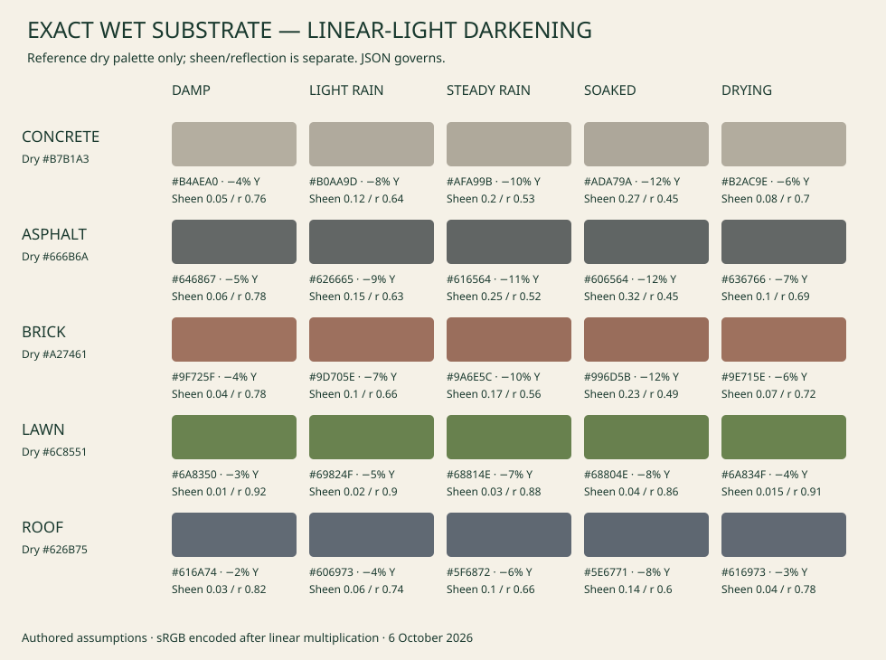

WorldEngine · Rain readabilityWORLDENGINE · STYLE B · 6 OCTOBER 2026
Rain that reads.
Phone-size concept panels. Bright shallow water, restrained wet sheen, visible rainfall. Artwork illustrates the look; exact values are authored proposals in JSON.
Rain street
Rain aerial
Snow street
Snow aerial
5 m — stain
5 m — water
20 m — water
40 m — water
Rain 5 m
Rain 20 m
Rain 40 m
Rain aerial distance
Dusk
Night
Surface values
Darkening % / sheen. Linear-light substrate darkening; reflected sky is separate.
Exact substrate chart

Complete reference sheets
01-wetness-states

02-puddle-stain-vs-water

03-rain-phone-distance

04-rain-dusk-night

05-snow-phone-stages

06-phone-rain-snow-acceptance